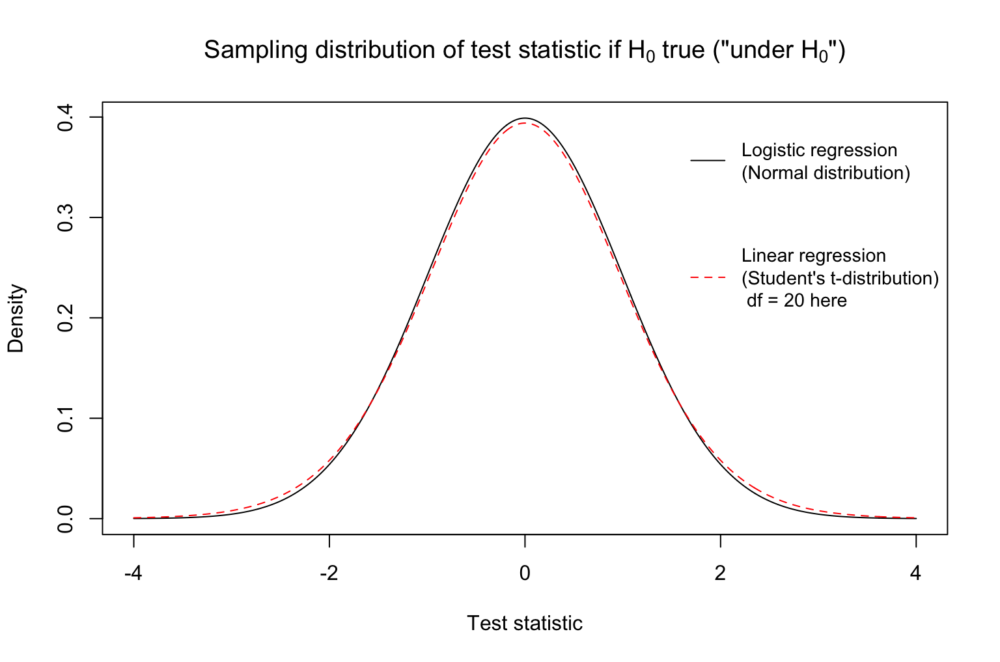

7.3 Hypothesis Testing
Hypothesis testing is another tool that can be used for statistical inference. Let’s warm up to the ideas of hypothesis testing by considering two broad types of scientific questions: (1) Is there a relationship? (2) What is the relationship?
Suppose that we are thinking about the relationship between housing prices and square footage. Accounting for sampling variation…
- …is there a real relationship between price and living area?
- …what is the real relationship between price and living area?
Whether by mathematical theory or bootstrapping, confidence intervals provide a range of plausible values for the true population parameter and allow us to answer both types of questions:
- Is there a real relationship between price and living area?
- Is the null value (0 for slopes, 1 for odds ratios) in the interval?
- What is the relationship between price and living area?
- Look at the estimate and the values in the interval
Hypothesis testing is a general framework for answering questions of the first type. It is a general framework for making decisions between two “theories”.
Example 1
Decide between: true support for a law = 50% vs. true support \(\neq\) 50%Example 2
In the model \(\text{Price} = \beta_0 + \beta_1\text{Living Area} + \text{Error}\), decide between \(\beta_1 = 0\) and \(\beta_1 \neq 0\).
7.3.1 Hypothesis Test Procedure
7.3.1.1 Hypotheses
In a hypothesis test, we use data to decide between two “hypotheses” about the population. These hypotheses can be described using mathematical notation and words.
- Null hypothesis (\(H_0\) = “H naught”)
- A status quo hypothesis
- In words: there is no effect/relationship/difference.
- In notation: the population parameter equals a null value, such as the slope being zero \(H_0: \beta_1 = 0\) or the odds ratio being 1, \(H_0: e^{\beta_1} = 1\).
- Hypothesis that is assumed to be true by default.
- Alternative hypothesis (\(H_A\) or \(H_1\))
- A non-status quo hypothesis
- In words: there is an effect/relationship/difference.
- In notation: the population parameter does not equal a null value, \(H_A: \beta_1 \neq 0\) or \(H_A: e^{\beta_1} \neq 1\).
- This is typically news worthy.
7.3.1.2 Test statistics
Let’s consider an example research question: Is there a relationship between house price and living area? We can try to answer that with the linear regression model below:
\[E[\text{Price} | \text{Living Area}] = \beta_0 + \beta_1\text{Living Area}\]
We would phrase our null and alternative hypotheses using mathematical notation as follows:
\[H_0: \beta_1 = 0 \qquad \text{vs.} \qquad H_A: \beta_1 \neq 0\] In words, the null hypothesis \(H_0\) describes the situation of “no relationship” because it hypothesizes that the true slope \(\beta_1\) is 0. The alternative hypothesis posits a real relationship: the true population slope \(\beta_1\) is not 0. That is, there is not no relationship. (Double negatives!)
To gather evidence, we collect data and fit a model. From the model, we can compute a test statistic, which tells us how far the observed data is from the null hypothesis. The test statistic is a discrepancy measure where large values indicate higher discrepancy with the null hypothesis, \(H_0\).
When we are studying slopes in a linear model, the test statistic is the distance from the null hypothesis value of 0 (the null value) in terms of standard errors. The test statistic for testing one slope coefficient is:
\[T= \text{Test statistic} = \frac{\text{estimate} - \text{null value}}{\text{std. error of estimate}}\]
It looks like a z-score. It expresses: how far away is our slope estimate from the null value in units of standard error? With large values (in magnitude) of the test statistic, our data (and our estimate) is discrepant with what the null hypothesis proposes because our estimate is quite far away from the null value in standard error units. A large test statistic makes us start to doubt the null value.
7.3.1.3 Accounting for Uncertainty
Test statistics are random variables! Why? Because they are based on our random sample of data. Thus, it will be helpful to understand the sampling distributions of test statistics.
What test statistics are we likely to get if \(H_0\) is true? The distribution of the test statistic introduced above “under \(H_0\)” (that is, if \(H_0\) is true) is shown below. Note that it is centered at 0. This distribution shows that if indeed the population parameter equals the null value, there is variation in the test statistics we might obtain from random samples, but most test statistics are around zero.

It would be very unlikely for us to get a pretty large (extreme) test statistic if indeed \(H_0\) were true. Why? The density drops rapidly at more extreme values.
How large in magnitude must the test statistic be in order to make a decision between \(H_0\) and \(H_A\)? We will use another metric called a p-value. This allows us to account for the variability and randomness of our sample data.
Assuming \(H_0\) is true, we ask: What is the chance of observing a test statistic which is “as or even more extreme” than the one we just saw? This conditional probability is called a p-value, \(P(|T| \geq t_{obs} | H_0\text{ is true})\).
If our test statistic is large, then our estimate is quite far away from the null value (in standard error units), and then the chance of observing someone this large or larger (assuming \(H_0\) is true) would be very small. A large test statistic leads to a small p-value.
If our test statistic is small, then our estimate is quite close to the null value (in standard error units), and then the chance of observing someone this large or larger (assuming \(H_0\) is true) would be very large. A small test statistic leads to a large p-value.
Suppose that our observed test statistic for a slope coefficient is 2. What test statistics are “as or more extreme”?
- Absolute value of test statistic is at least 2: \(|\text{Test statistic}| \geq 2\)
- In other words: \(\text{Test statistic} \geq 2\) or \(\text{Test statistic} \leq -2\)
The p-value is the area under the curve of the probability density function in those “as or more extreme” regions.
Suppose the test statistic for a slope coefficient is -0.5. This means that the estimated slope is half of a standard error away from 0, which indicates no relationship. This is not the far and happens quite frequently, about 62% of the time, when the true slope is actually 0.
7.3.1.4 Making Decisions
If the p-value is “small”, then we reject \(H_0\) in favor of \(H_A\). Why? A small p-value (by definition) says that if the null hypotheses were indeed true, we are unlikely to have seen such an extreme discrepancy measure (test statistic). We made an assumption that the null is true, and operating under that assumption, we observed something odd and unusual. This makes us reconsider our null hypothesis.
How small is small enough for a p-value? We will set a threshold \(\alpha\) ahead of time, before looking at the data. P-values less than this threshold will be “small enough”. When we talk about errors of the decisions associated with rejecting or not rejecting the null hypothesis, the meaning of \(\alpha\) will become more clear.
7.3.1.5 Procedure Summary
- State hypotheses \(H_0\) and \(H_A\).
- Select \(\alpha\), a threshold for what is considered to be a small enough p-value.
- Calculate a test statistic.
- Calculate the corresponding p-value.
- Make a decision:
- If p-value \(\leq\alpha\), reject \(H_0\) in favor of \(H_A\).
- Otherwise, we fail to reject \(H_0\) for lack of evidence.
(If this helps to remember: U.S. jurors’ decisions are “guilty” and “not guilty”. Not “guilty” and “innocent”.)
7.3.2 Hypothesis Testing Errors
Just as with model predictions, we may make errors when doing hypothesis tests.
We may decide to reject \(H_0\) when it is actually true. We may decide to not reject \(H_0\) when it is actually false.
We give these two types of errors names.
Type 1 Error is when you reject \(H_0\) when it is actually true. This is a false positive because you are concluding there is a real relationship when there is none. This would happen if one study published that coffee causes cancer in one group of people, but no one else could actually replicate that result since coffee doesn’t actually cause cancer.
Type 2 Error is when you don’t reject \(H_0\) when it is actually false. This is a false negative because you would conclude there is no real relationship when there is a real relationship. This happens when our sample size is not large enough to detect the real relationship due to the large amount of noise due to sampling variability.
We care about both of these types of errors. Sometimes we prioritize one over the other. Based on the framework presented, we control the chance of a Type 1 error through the confidence level/p-value threshold we used. In fact, the chance of a Type 1 Error is \(\alpha\),
\[P(\text{ Type 1 Error }) = P(\text{ Reject }H_0 ~|~H_0\text{ is true} ) = \alpha\]
Let \(\alpha = 0.05\) for a moment. If the null hypothesis (\(H_0\)) is actually true, then about 5% of the time, we’d get unusual test statistics due to random sample data. With those samples, we would incorrectly conclude that there was a real relationship.
The chance of a Type 2 Error is often notated as \(\beta\) (but this is not the same value as the slope),
\[P(\text{ Type 2 Error }) = P(\text{ Fail to Reject }H_0 ~|~H_0\text{ is false} ) = \beta\]
We control the chance of a Type 2 error when choosing the sample size. With a larger sample size \(n\), we will be able to more accurately detect real relationships. The power of a test, the ability to detect real relationships, is \(P(\text{Reject }H_0 ~|~H_0\text{ is false}) = 1 - \beta\). In order to calculate these two probabilities, we’d need to know the value (or at least a good idea) of the true effect.
To recap,
- If we lower \(\alpha\), the threshold we use to determine the p-value is small enough to reject \(H_0\), we can reduce the chance of a Type 1 Error.
- Lowering \(\alpha\) makes it harder to reject \(H_0\), thus we might have a higher chance of a Type 2 Error.
- Another way we can increase the power and thus decrease the chance of a Type 2 Error is to increase the sample size.
7.3.3 Statistical Significance v. Practical Significance
The common underlying question that we ask as Statisticians is “Is there a real relationship in the population?”
We can use confidence intervals or hypothesis testing to help us answer this question.
If we note that the no relationship value is NOT in the confidence interval or the p-value is less then \(\alpha\), we can say that there is significant evidence to suggest that there is a real relationship. We can conclude there is a statistically significant relationship because the relationship we observed it is unlikely be due only to sampling variabliliy.
But as we discussed in class, there are two ways you can control the width of a confidence interval. If we increase the sample size \(n\), the standard error decreases and thus decreasing the width of the interval. If we decrease our confidence level (increase \(\alpha\)), then we decrease the width of the interval.
A relationship is practically significant if the estimated effect is large enough to impact real life decisions. For example, an Internet company may run a study on website design. Since data on observed clicks is fairly cheap to obtain, their sample size is 1 million people (!). With large data sets, we will conclude almost every relationship is statistically significant because the variability will be incredibly small. That doesn’t mean we should always change the website design. How large of an impact did the size of the font make on user behavior? That depends on the business model. On the other hand, in-person human studies are expensive to run and sample sizes tended to be in the 100’s. There may be a true relationship but we can’t distinguish the “signal” from the “noise” due to the higher levels of sampling variability. While we may not always have statistical significance, the estimated effect is important to consider when designing the next study.
Hypothesis tests are useful in determining statistical significance (Answering: “Is there a relationship?”).
Confidence intervals are more useful in determining practical significance (Answering: “What is the relationship?”)
Recommended Readings about P-values and Limitations of Hypothesis Testing: